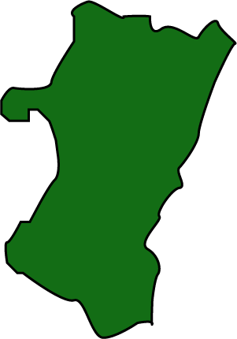
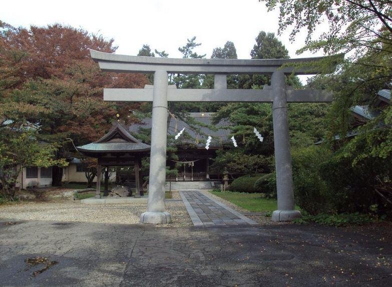
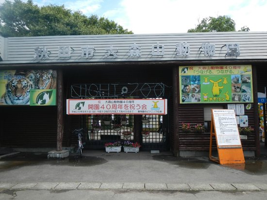
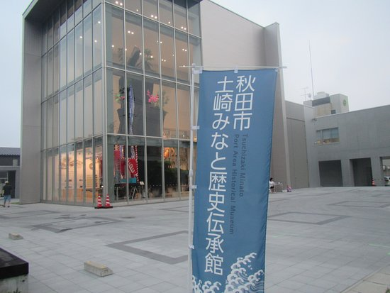

Akita is the capital and largest city of Akita Prefecture. Other major cities include Yokote, Daisen, and Yurihonjō. Akita Prefecture is located on the coast of the Sea of Japan and extends east to the Ōu Mountains, the longest mountain range in Japan, at the border with Iwate Prefecture. Akita Prefecture formed the northern half of the historic Dewa Province with Yamagata Prefecture. *(Wikipedia ,.,)
Prefecture Image
Senshu Park
Omoriyama Zoo
Tuchizaki Minato Historical Museum
